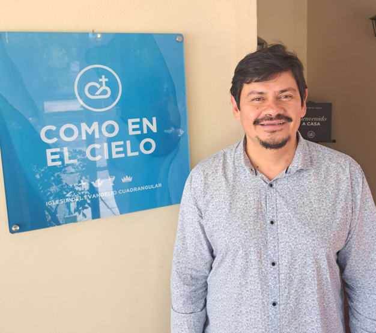
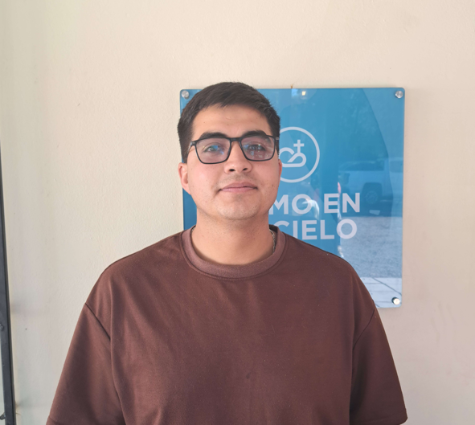

Pastor: Elias Nuñez

Un lugar para crecer en fe
¡Te invitamos a ser parte de nuestra iglesia!
Somos una iglesia dedicada a compartir el mensaje de la buena noticia del Señor, sirviendo a nuestra comunidad y creciendo juntos en la palabra.
Equipo que nos une como iglesia
Pastor: Elias Nuñez

Encargado Jóvenes: Miguel Dinamarca

Encargado Sonido: Miguel Dinamarca
Encargado Tesorería: Jonathan Hermosilla

Esto es un texto de ejemplo
Esto es un texto de ejemplo
Esto es un texto de ejemplo
Esto es un texto de ejemplo
Esto es un texto de ejemplo
Esto es un texto de ejemplo